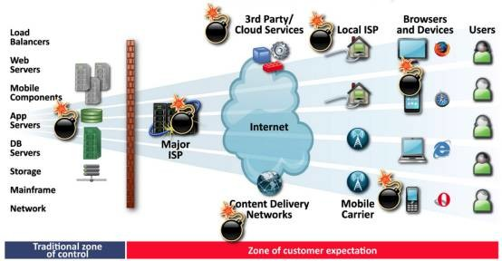
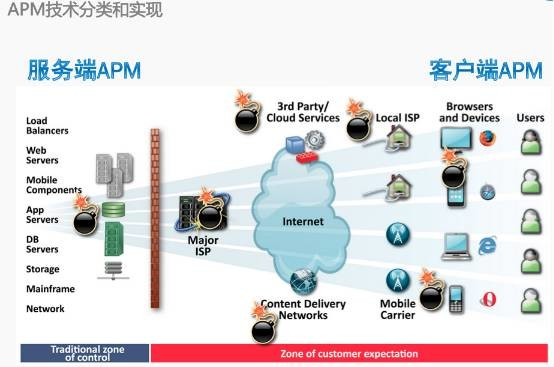
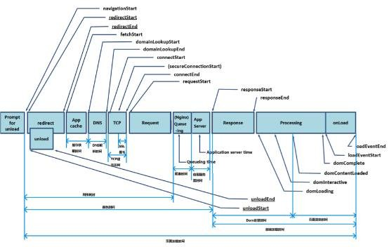
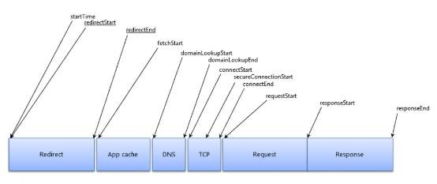
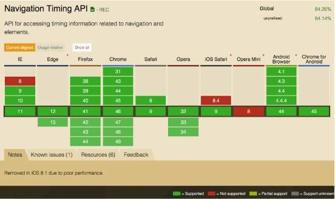
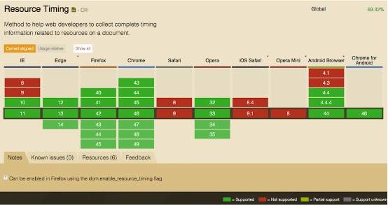
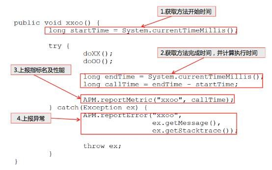
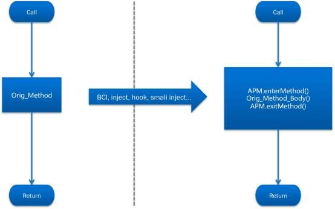
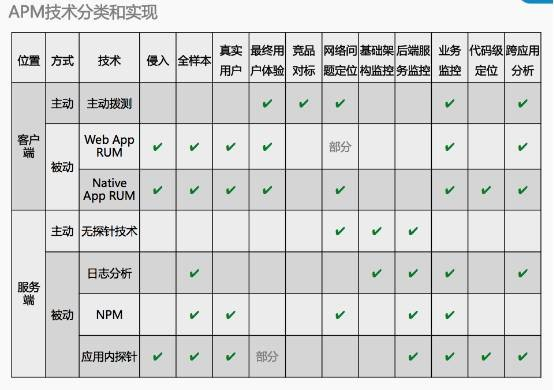

陈靖华：解读APM技术分类和实现方式
“查看陈靖华关于APM的第一篇分享：2个实例+5个维度解读APM技术
在讲了APM的历史、作用和实际案例之后，下面我们来了解一下APM技术分类和实现方式以及它未来的发展趋势。在这之前，我们首先需要了解一下典型的互联网或移动互联网应用的整个应用交付链。

图1
上面这张示意图给出的就是一种典型的互联网应用的应用交付链，在这个应用交付链最左端是部署在机房或云服务商上的相对可控的区域，例如负载均衡、Web服务、应用服务器、数据库、消息总线、存储、等等。越往右就是离应用的最终用户越近的部分，会涉及到机房或云服务的链路，第三方的服务（例如云服务、CDN、推送、地图等等），用户设备接入的本地运营商、移动运营商、用户访问应用使用的不同终端设备，浏览器等等。
所有图上标注了炸弹的位置，都是整个应用交付链里容易出现性能问题和降低用户体验的问题点，例如浏览器或设备的不兼容、2G/3G/4G网络基站的拥塞、各地无良运营商的劫持、CDN节点的故障、第三方API接口的限流策略、骨干网运营商的线路维护、以及服务端的代码、服务、资源等问题。所有这些问题都是APM需要关注的问题，理论上，从左到右，对运维和研发人员来说，总体的可控度是递减的，而APM的引入就是希望能提高运维和研发人员对这些问题的可控度、降低TTR。
因此APM需要关注或者说需要采集数据的位置也就是图上的这些炸弹的位置，而不同位置的数据采集就带来了APM技术的不同分类。
从APM监测部署的位置（或者叫做数据采集位置）来分，基本上可以分成客户端和服务端两大类技术。分别针对最终用户侧和应用服务侧的APM技术。我们通常说的端到端的应用性能管理，指的就是从这两端来实现的APM技术组合。

图2
从客户端角度的APM技术分类上来看，又可以分为主动式的APM客户端监测技术和被动式的监测技术两大类：
主动式的客户端监测技术称为Synthetic Monitoring：Synthetic，从字面的意思翻译是人工合成的，也就是说这种监测技术的数据采集不是真实用户产生而是人工模拟出来的，通过探针模拟真实用户的访问行为来对应用进行主动式的访问来采集数据，也就是通常说的拨测。这种监测方式需要部署一定数量的监测节点，通过定时调度的计划来主动访问应用来采集数据。
主动式监测由于监测节点可控度非常高，理论上你可以利用这些监测点做任何的数据采集，因此此类技术的适用场景包括做应用性能特别是可用性的监测，做对比测试（例如IDC/CDN/云服务商的对比和选型），竞品对标，压力测试等。
由于主动式监测使用的是模拟的样本数据，需要有足够多的样本才能模拟出真实用户的性能体验，否则会存在较大的样本偏差，导致错误的结论。所以，如果要部署大量的监测节点的话，成本还是比较高的，因此目前此类监测很少有自己部署的，大部分使用的都是一些厂商提供的第三方监测服务。
被动式客户端APM监测技术称为RUM：即真实用户的监测，利用的是真实的用户对应用的访问来采集性能数据。RUM有一个天然的优势就是基本上没有样本偏差，当全流量采集数据的时候，采集到的数据就是你的用户的真实体验数据。目前客户端的RUM技术会覆盖两部分的典型应用：Web App和Native App，这里面当然也包括现在比较流行的Hybrid App。
从客户端采集真实用户的性能数据基本上用的就是埋码这一条途径了，对于Web App，通过页面上插入JS，利用现代浏览器提供的Navigation Timing（https://www.w3.org/TR/navigation-timing/）和Resource Timing（https://www.w3.org/TR/resource-timing/）接口来采集性能数据。

图3

图4
雅虎的Boomerang就是基于Web页面埋码的性能数据采集框架。
当然并不是所有浏览器都能很好地支持这些标准接口的，例如iOS 8.0.1以后的所有iOS 8版本就是因为性能的问题去掉了Navigation Timing接口，不过好消息是在iOS 9之后这个接口终于又回来了。
下面这两个图列出的目前各种浏览器版本对这两个API接口的支持程度。

图5

图6
而对Native App的RUM监控就没有什么标准的接口可以用了，如果想自己做的话一般依赖于研发人员手工埋码，或者在开发App的时候使用一套统一的框架来进行埋码和采集。
目前APM行业里通常的做法是提供一套可以自动埋码和采集数据的SDK来自动完成监控代码的注入工作。通过这种方式可以做到开发人员只需要修改少量代码甚至一行代码都无需修改就可以集成RUM的数据采集功能到App中。这里使用到的自动代码注入技术与服务端监控的代码注入机制类似。

图7
如图，通过在需要监控的方法（例如：需要监控HTTP访问请求的性能，需要监控的方法就是HttpURLConnection, AndroidHttpClient等类下的方法）外面包上一层监控代码来采集方法的执行时间，异常等信息。
在Android上实际上还可以有多种代码的注入方式：

图8
在编译打包过程注入，通过-javaagent加载探针的方式在dex转码阶段直接对字节码进行修改来加入监控代码。
在C代码层面进行注入，对一些底层和native方法（例如DNS解析部分的性能采集）的监控，通常使用C对应用进行代码注入和挂钩子。
直接修改APK包中的字节码，通常的步骤是APK解包，反编译成smali，修改smali代码再重新编译打包回去。这种方式不需要用户提供源代码即可完成监控代码的注入，不过对混淆过的代码这种方式就比较困难了。
在iOS上通常也有多种技术来对代码进行注入，例如使用swizzle的Object-C hook，消息转发和修改符号表技术等等。
客户端的RUM一个非常重要的技术难点就是对客户端资源的消耗的控制。包括计算资源（CPU，内存）以及网络资源（流量）。对计算资源的消耗最终可能影响应用本身的性能，如果控制不好会变成为了做性能监测反而引入新的性能问题。
因此对性能数据的采集上一般会对不存在性能问题的样本数据在客户端上降低采样比例或者是只采集简单的汇总数据，而只对超过性能阈值和异常的数据进行详细的数据采集。同样在客户端进行一部分的数据汇总和合并，（例如短时间内，客户端发生同一种网络故障是往往是重复出现的，可以合并以后再上报），在不同网络环境下使用不同的数据上报策略，这些都可以极大地降低对网络流量的消耗。
再来看看服务端的APM技术。目前比较常用的服务端APM技术大概可以分为以下四种：
无探针技术：无需安装探针，通过系统或服务自身提供的状态接口来进行组件的性能和状态的监控，例如通过SNMP等协议实现的监控，这种监测技术大家应该比较熟悉了，例如常见的Cacti, Zabbix等工具都属于这一类型的监控技术。无探针技术目前是作为APM中的辅助技术来提供第四个维度的应用组件性能和状态数据的。
日志分析技术：日志分析能做的事情非常多，其中一部分就是APM，实际上日志分析是APM中非常重要的一种补充。通过采集系统、组件和应用的日志并进行实时的分析来进行性能评估和问题的定位。目前比较热门的ELKstack（Elasticsearch, Logstash, Kibana，参考：https://www.gitbook.com/book/chenryn/kibana-guide-cn/details ）就是这方面技术的应用。
NPM技术：此类技术使用的是网络协议包监听和分析的技术来实现的应用性能管理，实际上是属于NPM（Network Performance Management）领域的产品，用在APM领域的时候通常叫做aaNPM（Application Aware Network Performance Management，应用感知网络性能管理）。NPM的厂商比较多了，也有一些开源的产品例如ntop（http://www.ntop.org/）大家有兴趣可以了解一下。aaNPM可以采集足够详细的应用网络性能方面的数据，但是无法提供代码级别的性能数据。
应用内探针技术：这个应该是目前APM行业里比较流行的技术，使用的是运行在应用内部（应用服务器上）的探针，由于探针与用户的代码在一起运行在应用内部，因此可以采集到非常详细的性能指标数据和业务指标数据，包括应用的响应时间，代码模块的执行时间，应用调用其他服务组件或API接口的响应时间，代码对系统资源的消耗等。
此外，运行在应用内部的探针还可以对代码的调用栈和应用之间的调用链进行跟踪，可以提供非常完整的业务调用栈性能数据和追踪数据。
相比其他三种技术，应用内探针使用的是侵入式的探测技术，具有非常明显的优点就是调用栈的跟踪和代码的定位，但是也带来了对应用的性能和稳定性产生影响的风险。不过目前好的探针技术基本都可以做到在极低的性能和稳定性影响风险的情况下采集到足够详细的应用性能数据了。
应用内探针技术通常有两种实现方式，一种是提供一整套的SDK框架，由开发人员按照要求在需要采集性能或业务数据的地方手工埋码来实现应用内探针的部署。这种方式典型的代表工具就是大众点评的开源项目CAT（https://github.com/dianping/cat）了。
第二种方式使用的是自动插桩的方式来部署探针，通过JDK 1.5以上版本提供的Instrumentation的特性，利用JavaAgent在应用运行的时候进行字节码修改的方案。该方案无需开发人员改动代码，即可将监控代码自动注入到需要采集性能和业务数据的位置，来实现应用内探针的部署。目前大部分的商业APM采用的都是这种方式来实现的。
目前使用这种方案的一些Java开源APM项目有：
Zorka（http://zorka.io/）
Pinpoint（https://github.com/naver/pinpoint）
SCOUTER（https://github.com/scouter-project/scouter）
列了这么多APM的技术大家可以看到，没有一项技术是可以完全取代另外一项的，不同的APM技术适用于不同的应用场景。这里给出了一张我们自己总结的APM技术使用场景对照表。

同时在APM的技术发展上，越来越复杂的应用架构和应用场景，越来越需要将不同的APM技术组合在一起使用，对端到端的性能数据进行相关性分析，才能快速准确地定位性能问题点。Gartner也是在2015年第一次将APM魔力象限的名称从Application Performance Monitoring改成了Application Performance Monitoring Suites.
由于客户端APM和服务端APM探针部署的位置差异导致各自只能看到完整调用链中一部分的性能数据和现象，因此只有把两端的数据关联在一起分析才能更精确的定位问题。同样的在服务端的应用中，完成一个业务/事务的处理往往需要在不同的应用系统、组件和服务之间相互调用和传递数据，只有将各应用和组件之间的性能数据通过业务的调用链关联起来才有可能对性能问题进行快速有效的追踪和定位。这就是APM分析中的跨应用分析和追踪技术，这项技术的实现就很大程度上依赖于应用内探针技术。
通过应用内探针技术，在对应用进行自动埋码进行性能数据采集的同时，还可以对应用的响应信息和应用对外的服务调用请求进行适当的修改，加入用来追踪的数据（例如在HTTP请求头里加入追踪的会话ID等等），而在客户端和其他应用组件内部的探针就可以对这些追踪数据做相应的处理，并且在数据采集的时候对每个请求做关联了。
通过跨应用追踪技术，在客户端就可以迅速了解一个请求慢是由于服务端的接口响应慢还是网络延时高导致的，而在服务端的接口数据里，又可以详细地钻取到最终导致应用的复杂调用链响应慢情况下特定的服务组件或代码。
从2014年Gartner发布的IT运维管理的技术Hype Cycle（技术成熟度曲线）可以了解到2014年的时候，APM技术在其中的位置处于第三阶段，也就是在退烧阶段。在这个阶段，大家对APM技术将会有更理性的认识，而在这个阶段坚持下来的厂商将会推动该技术进入爬坡期，慢慢走向成熟。预计在5-10年的时间内达到平台期。
2015年之后，原来的“IT运维管理”的Hype Cycle图被拆成了3个图。其中，APM技术被归类到了“IT基础设施可用性及性能管理”这个图里。从2015年的新数据中我们可以看出来，APM的技术发展还是比较快的，甚至快过了NPM技术的发展，预计在未来的2-5年（2014年的时候预测是5-10年）达到成熟区（平台期）。
1. 移动APM的需求会快速增长
从整个互联网的发展趋势来看，越来越多的用户选择移动设备而不是桌面PC来访问互联网，移动应用的用户已经超过了桌面应用的用户数。而在移动应用的体验上，由于移动设备屏幕的独占性，用户通常对性能和用户体验会有更高的要求，然而我们却往往在移动应用上面会碰到更多的问题和挑战，例如在设备、运营商、地理位置、网络接入、应用开发框架方面，都存在着比桌面应用更多的各种性能瓶颈，严重影响用户的移动体验。
更进一步的是用户对同时在不同的移动设备上进行无缝切换使用的要求（例如iOS 的Handoff），也对移动应用开发和性能管理提出了新的挑战。
2. APM将融合更多新兴的技术，从单纯的性能监控走向真正的性能管理
通过大数据，机器学习，云，容器等技术的融合，APM将提供更智能的性能管理，例如应用基线的智能学习和计算，无需用户设置阈值，并且在探测到性能问题和异常的时候可以根据用户设定的策略自动调整系统的负载调度和资源的伸缩，而不只是仅仅通知用户。
3. APM将更加关注最终用户体验和业务
最终用户体验一直以来都是APM中最重要的维度（这也是为什么Gartner将其列为5个维度中的第一个），在未来的今年内，随着移动互联网和IoT的快速发展，对最终用户体验的关注将成为重中之重。
于此同时，业务指标也将成为APM的另外一个关注点，APM将不仅仅只是关注应用的性能，而会更加关注性能对用户体验和业务指标的影响，将业务的表现关联到性能指标上。例如通过APM系统将可以实时了解到一个数据库查询的故障将直接影响到多少订单的成交。
4. 用户期待更完整的统一IT管理平台
几年内，微服务，云计算，容器技术以及多语言编程的兴起，将带来越来越复杂的应用，对应用需要监控和管理的点越来越多，我们已经看到用户将迫切需要一个将各类IT监控和管理技术融合在一起的统一IT管理平台。因此融合APM技术以及相关的NPM、EUEM、ITOA已经BSM技术将是未来IT管理的必然趋势。
加入我们
EGO聚集了众多业界技术牛人（查看EGO初始108位会员），并且每周都会请一位大牛会员做一次只面对EGO会员的内部分享。同时EGO紧跟时下热点，邀请业界各种你想见却见不到的大牛为会员做分享~想与大牛面对面交流？快戳“阅读原文”，EGO期待优秀的你的加入！
—————— END——————
回复关键字查看更多干货
人才招聘 | 团队管理 | 企业架构 |
个人成长 | 创业之路
版权所有 欢迎转载 转载请注明：
本文来源EGO（微信号：egonetworks）
↓↓↓↓了解EGO更多信息和会员报名请戳“阅读原文”